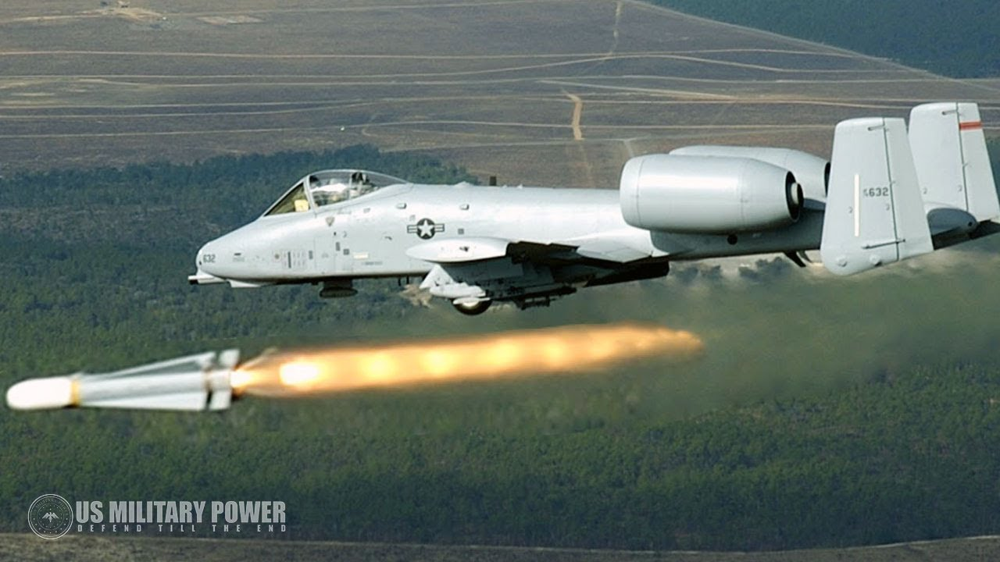

What is a Strike Jet?

A strike jet (also known as a strike fighter or attack aircraft) is a type of military aircraft designed primarily to deliver precision attacks against ground and sea targets. Unlike traditional fighter jets that focus on air-to-air combat, strike jets are optimized for air-to-ground missions, often while retaining air combat capabilities.
Strike jets typically carry a mix of guided and unguided munitions, including bombs, missiles, and rockets. Many modern strike jets are multirole, meaning they can switch between air-to-air and air-to-ground roles depending on mission requirements.
Uses of Strike Jets

Precision Ground Attacks
Delivering accurate strikes on enemy installations, vehicles, and personnel using guided munitions like laser-guided bombs and cruise missiles.
Close Air Support (CAS)
Providing direct support to ground troops by attacking enemy forces in close proximity to friendly units.
Suppression of Enemy Air Defenses (SEAD)
Targeting and disabling enemy radar and missile systems to clear the way for other aircraft and operations.
Training and Simulation
Preparing pilots through realistic combat simulations and tactical exercises.
Strategic Bombing
Conducting long-range missions to destroy high-value strategic targets like command centers, supply depots, and infrastructure.